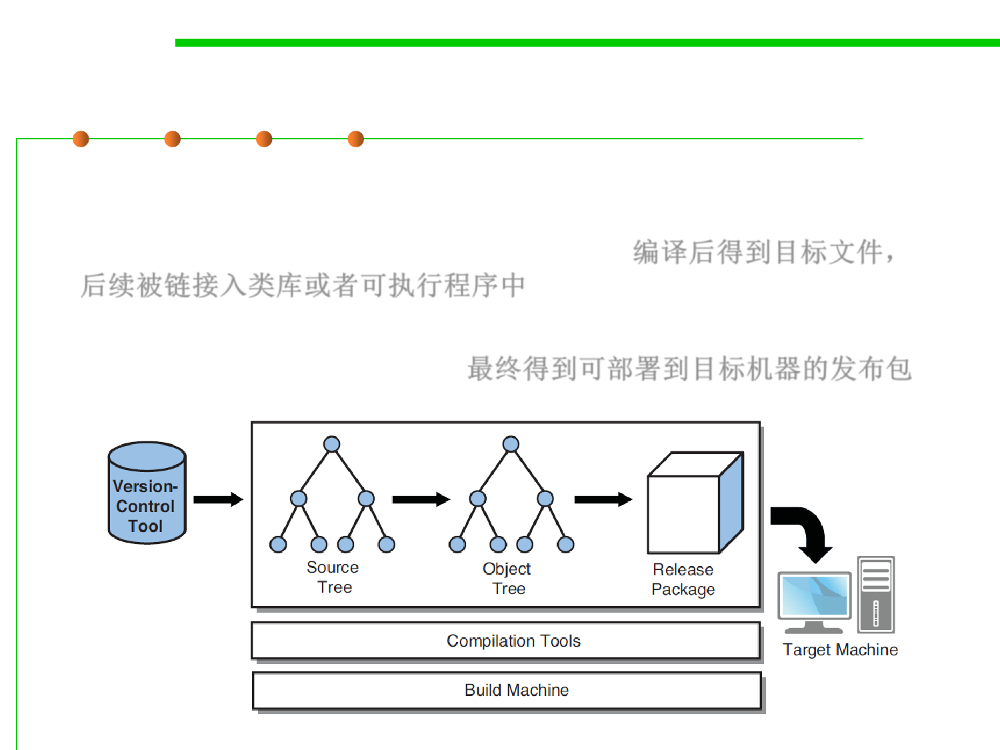

2.2 Process, Systems, and Tools of Software Construction
Compiled Languages
▪ Compiled languages such as C, C++, Java, and C#. In this model,
source files are compiled into object files, which are then linked
into code libraries or executable programs. 编译后得到目标文件，
后续被链接入类库或者可执行程序中
▪ The resulting files are collected into a release package that can be
installed on a target machine. 最终得到可部署到目标机器的发布包